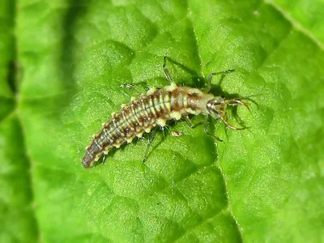
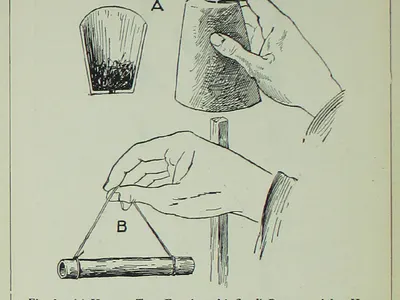
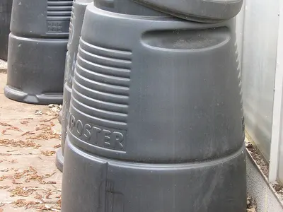
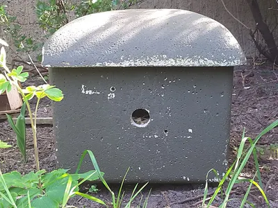

Nützlinge im Garten fördern
Ein Garten mit vielen Nützlingen braucht kaum Pflanzenschutz. Marienkäfer und Florfliegen fressen Blattläuse, Igel, Kröten und Laufkäfer halten Schnecken klein. Damit sie bleiben, brauchen sie Nahrung, Verstecke und einen Platz für den Winter.
Kurz gesagt: Lass eine wilde Ecke stehen, verzichte auf Spritzmittel und biete Unterschlüpfe an. Nützlinge zu kaufen lohnt sich vor allem bei frühem Blattlausbefall.
Im Vergleich
| Frisst vor allem | Fördern mit | Aufwand | Unser Urteil | |
|---|---|---|---|---|
| Marienkäfer | Blattläuse | Laub, hohle Stängel, keine Spritzmittel | gering | Der bekannteste Helfer, kommt von selbst |
| Florfliege | Blattläuse, Spinnmilben | Blüten, kühler Raum zum Überwintern | gering | Sehr wirksam, die Larven fressen viel |
| Ohrwurm | Blattläuse, Insekteneier | Ohrwurmtopf im Obstbaum | gering | Einfach und günstig, ideal für Obstbäume |
| Igel, Kröte, Blindschleiche | Schnecken, Käfer, Larven | Laubhaufen, Durchgang im Zaun, Teich | mittel | Die besten Helfer gegen Schnecken |
| Wildbienen und Hummeln | Pollen und Nektar | Nisthilfe, heimische Blüten | gering | Für mehr Obst und Gemüse |
Preise sind grobe Richtwerte, Stand November 2026.
Marienkäfer und Florfliege
Die wichtigsten Blattlausjäger.
Vorteile
- Ihre Larven fressen während ihrer Entwicklung Hunderte Blattläuse.
- Sie kommen von selbst, wenn sie Futter und Winterquartiere finden.
- Gekaufte Larven helfen bei frühem Befall in Beet und Gewächshaus.
Nachteile
- Spritzmittel gegen Läuse töten auch die Helfer.
- Ganz ohne Läuse finden sie kein Futter und wandern ab.
Passende Arten: Siebenpunkt-Marienkäfer, Florfliege, Hainschwebfliege
- Beispielfoto · Foto: Albarubescens, CC BY-SA 4.0 – Lizenzangaben im Bildnachweis
 Unser Tipp
Unser TippMarienkäferlarven gegen Blattläuse
Auswahl bei Amazon
Lebende Larven, die direkt auf befallene Pflanzen gesetzt werden. Wirkt am besten bei frühem Befall.
Bei Amazon ansehen Marienkäferlarven gegen Blattläuse (Werbelink, öffnet in neuem Fenster) - Beispielfoto · Foto: Bj.schoenmakers, CC BY 3.0 – Lizenzangaben im Bildnachweis

Florfliegenlarven
Auswahl bei Amazon
Die „Blattlauslöwen“ fressen Blattläuse, Spinnmilben und Thripse, auch im Gewächshaus.
Bei Amazon ansehen Florfliegenlarven (Werbelink, öffnet in neuem Fenster)
Werbelink: Wenn du über diesen Link etwas kaufst, erhält der Gartentierkompass eine kleine Provision von Amazon. Für dich ändert sich am Preis nichts. Als Amazon-Partner verdiene ich an qualifizierten Verkäufen.
Ohrwurm im Obstbaum
Einfach und günstig, ideal für Obstbäume.
Vorteile
- Ein Tontopf mit Holzwolle, kopfüber in den Baum gehängt, dient als Tagesversteck.
- Nachts jagen die Ohrwürmer Blattläuse.
Nachteile
- Der Topf muss einen Ast berühren, sonst finden die Tiere nicht hinein.
- Ab und zu knabbern Ohrwürmer auch an weichen Früchten.
Passende Arten: Gemeiner Ohrwurm
- Beispielfoto · Foto: Harry Higgott Thomas, Gemeinfrei – Lizenzangaben im Bildnachweis

Ohrwurm-Unterschlupf
Auswahl bei Amazon
Ein mit Holzwolle gefüllter Topf für den Obstbaum. Darin wohnen tagsüber Ohrwürmer, nachts jagen sie Blattläuse.
Bei Amazon ansehen Ohrwurm-Unterschlupf (Werbelink, öffnet in neuem Fenster)
Werbelink: Wenn du über diesen Link etwas kaufst, erhält der Gartentierkompass eine kleine Provision von Amazon. Für dich ändert sich am Preis nichts. Als Amazon-Partner verdiene ich an qualifizierten Verkäufen.
Igel, Kröte und Blindschleiche
Die besten Helfer gegen Schnecken.
Vorteile
- Ein Laub- oder Reisighaufen ist Versteck und Winterquartier zugleich.
- Ein fischfreier Teich zieht Kröten und Molche an.
- Eine Lücke von etwa 13 × 13 cm im Zaun lässt Igel durch.
Nachteile
- Mähroboter sind nachts eine Gefahr für Igel.
- Offene Lichtschächte werden zur Falle für Kröten.
Passende Arten: Igel, Erdkröte, Blindschleiche, Goldlaufkäfer
- Beispielfoto · Foto: 14GTR, CC BY-SA 4.0 – Lizenzangaben im Bildnachweis
 Unser Tipp
Unser TippIgelhaus, winterfest
Auswahl bei Amazon
Ein Unterschlupf für Winterschlaf und Kinderstube. Unter Hecke oder Laub an einen ruhigen Platz stellen.
Bei Amazon ansehen Igelhaus, winterfest (Werbelink, öffnet in neuem Fenster) - Beispielfoto · Foto: Caroline Ford, CC BY-SA 3.0 – Lizenzangaben im Bildnachweis

Thermokomposter
Auswahl bei Amazon
Macht aus Küchen- und Gartenresten Humus. Regenwürmer, Blindschleichen und Igel freuen sich über den warmen Platz.
Bei Amazon ansehen Thermokomposter (Werbelink, öffnet in neuem Fenster)
Werbelink: Wenn du über diesen Link etwas kaufst, erhält der Gartentierkompass eine kleine Provision von Amazon. Für dich ändert sich am Preis nichts. Als Amazon-Partner verdiene ich an qualifizierten Verkäufen.
Wildbienen und Hummeln
Für mehr Obst und Gemüse.
Vorteile
- Nisthilfen mit sauber gebohrten Löchern ziehen Mauerbienen an.
- Heimische Wildblumen liefern Pollen und Nektar.
- Hummeln fliegen schon bei kühlem Wetter.
Nachteile
- Billige Insektenhotels mit Splittern oder Zapfen bleiben oft leer.
- Ohne Blüten in der Nähe nützt die beste Nisthilfe nichts.
Passende Arten: Rote Mauerbiene, Dunkle Erdhummel, Honigbiene
- Beispielfoto · Foto: Dietmar Rabich, CC BY-SA 4.0 – Lizenzangaben im Bildnachweis
 Unser Tipp
Unser TippNisthilfe für Wildbienen
Auswahl bei Amazon
Achte auf sauber gebohrte Löcher oder Röhrchen ohne Splitter und eine regengeschützte, sonnige Lage.
Bei Amazon ansehen Nisthilfe für Wildbienen (Werbelink, öffnet in neuem Fenster) - Beispielfoto · Foto: DohleSchnackfass, CC0 – Lizenzangaben im Bildnachweis

Hummelnistkasten
Auswahl bei Amazon
Ein trockener Nistplatz für Hummelköniginnen. Im März an einen halbschattigen Platz stellen.
Bei Amazon ansehen Hummelnistkasten (Werbelink, öffnet in neuem Fenster) - Beispielfoto · Foto: Schubbay, CC BY-SA 4.0 – Lizenzangaben im Bildnachweis
 Unser Tipp
Unser TippWildblumen-Saatgut, regional
Auswahl bei Amazon
Heimische Wildblumen füttern Bienen, Schwebfliegen und Falter. Achte auf regionale Herkunft.
Bei Amazon ansehen Wildblumen-Saatgut, regional (Werbelink, öffnet in neuem Fenster)
Werbelink: Wenn du über diesen Link etwas kaufst, erhält der Gartentierkompass eine kleine Provision von Amazon. Für dich ändert sich am Preis nichts. Als Amazon-Partner verdiene ich an qualifizierten Verkäufen.
Fünf Regeln für einen nützlingsfreundlichen Garten
- Keine SpritzmittelAuch biologische Mittel treffen oft die Helfer. Ein paar Läuse sind Futter für die nächste Generation Marienkäfer.
- Eine wilde EckeBrennnesseln, Laub, Totholz und hohe Gräser bieten Futter und Verstecke.
- Stauden im Winter stehen lassenIn hohlen Stängeln überwintern Wildbienen, Marienkäfer und Spinnen-Eikokons.
- Heimische Blüten von Frühling bis HerbstWeide, Krokus, Obstblüten, Kräuter, Dost und Astern füttern Bestäuber über das ganze Jahr.
- Wasser anbietenEine flache Tränke oder ein kleiner Teich hilft Insekten, Vögeln, Igeln und Kröten.
Häufige Fragen
Welche Nützlinge fressen Blattläuse?
Vor allem Marienkäfer und ihre Larven, Florfliegenlarven, die Larven der Schwebfliegen und Ohrwürmer.
Lohnt es sich, Nützlinge zu kaufen?
Bei frühem Befall, im Gewächshaus oder an einzelnen Pflanzen kann es helfen. Dauerhaft wirkt ein Garten, in dem Nützlinge von selbst leben.
Wann sollte ich ein Insektenhotel aufhängen?
Am besten bis März, an einer sonnigen, regengeschützten Wand. Dann können die ersten Mauerbienen im Frühjahr einziehen.
Sind Ohrwürmer Schädlinge?
Meist nicht. Sie fressen viele Blattläuse und Insekteneier. Nur an weichen Früchten richten sie gelegentlich kleine Schäden an.
Von Nico Schober · Stand: 10. November 2026
Passende Arten
-
 tagaktiv
tagaktivSiebenpunkt-Marienkäfer
NützlingDer bekannteste Glücksbringer im Garten: rot mit sieben schwarzen Punkten und ein eifriger Blattlausjäger.
-
 nachtaktiv
nachtaktivFlorfliege
NützlingZartes, hellgrünes Insekt mit goldenen Augen und durchsichtigen Flügeln, das nachts ans Licht fliegt.
-
 nachtaktiv
nachtaktivGemeiner Ohrwurm
NützlingBrauner Nachtjäger mit Zange am Hinterleib. Er kriecht weder in Ohren noch kneift er ernsthaft.
-
 nachtaktiv
nachtaktivIgel
NützlingSäugetiereStacheliger Nachtwanderer, der auf seiner Runde mehrere Gärten besucht und dabei Käfer und Raupen frisst.